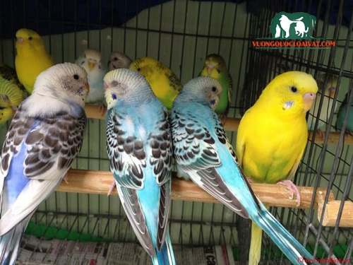
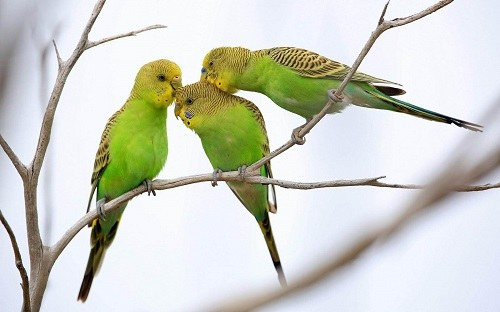
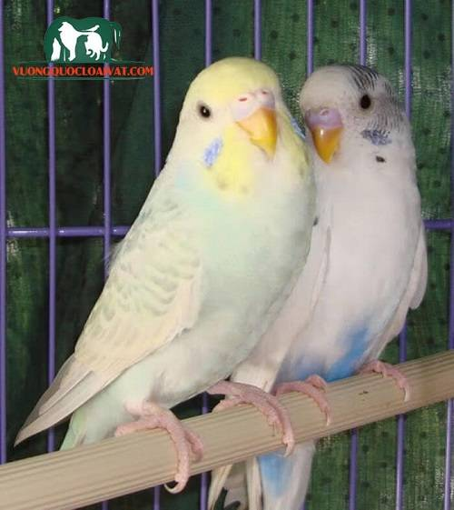
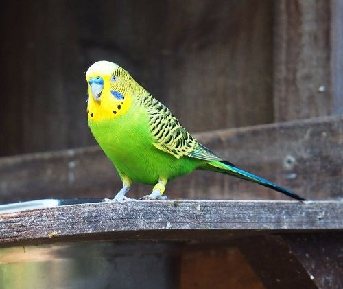

Chim Yến Phụng có biết nói không? Ăn gì? Giá bao nhiêu tiền
Nói đến chim yến phụng, có lẽ nhiều người sẽ thấy lạ lẫm. Tuy nhiên, khi nhắc đến chim vẹt, chắc chắn hầu hết người dân Việt Nam đều biết đến loài chim vô cùng thông minh, lém lỉnh này. Bài viết này sẽ chia sẻ đầy đủ thông tin về chú chim thú vị này.
Đặc điểm cơ thể của vẹt yến phụng
Vẹt yến phụng là loài vẹt có kích thước nhỏ, với những con vẹt yến phụng gốc thường có màu vàng, đầu và lưng có vằn đen, ngực và bụng có màu xanh, lông đuôi vàng. Ở gò má có đốm tròn và màu xanh đen. Tuy nhiên, hiện nay với những con vẹt con được nuôi dưỡng từ nhỏ thường có màu lông đa dạng hơn gồm:
Loại vàng hóa: Cả người đều màu vàng, mắt có màu đỏ
Loại vằn hổ: Được nuôi nhiều nhất hiện nay. Có các vết đốm trên cơ thể nhưng có màu xanh lam, vàng và xanh lục.
Loại trắng hóa: Toàn thân vẹt sẽ có màu trắng tinh khiết, mắt màu đỏ
Loài màu nhạt: Có thể phân biệt thành 2 loại là thân trên vàng đậm và thân dưới xanh nhạt. Trên cánh có đốm đen.
Sinh sản của vẹt yến phụng
Vẹt yến phụng sinh sản khá dễ nhưng cần phải duy trì loài thuần chủng. Để đảm bảo cho sự sinh trưởng và phát triển, bác sĩ thú y khuyên bạn nên chọn trống mái khoảng 1-2 tuổi.
Sau khi chim trống và chim mái giao phối, không lâu sau đó chim mái sẽ bắt đầu đẻ trứng. Vẹt yến phụng non thuộc loài trưởng thành khá muộn, trong khoảng 25 ngày sau khi nở không thể sống độc lập, sống chủ yếu dựa vào chim bố mẹ.
Vẹt yến phụng giá bao nhiêu?
Vẹt yến phụng là loài vẹt rất được yêu thích và nuôi nhiều hiện nay. Để mua vẹt yến phụng bạn có thể mua tại các cửa hàng bán chim cảnh trên cả nước. Đây là loài chim này sống theo đàn nên khi mua bạn nên lựa chọn theo cặp. Vẹt Yến Phụng giá bán khá bình dân chỉ dao động từ 180.000 đến 400.000 nghìn/đồng một cặp chim.
Vẹt yến phụng nói hay không?
Vẹt yến phụng nếu được huấn luyện có thể nói được nhiều thứ tiếng. Tuy nhiên để vẹt yến phụng nói lưu loát và rõ cần phải bỏ nhiều thời gian và công sức. Để huấn luyện được vẹt yến phụng nói hay bạn cần phải luyện từ khi vẹt non khoảng từ 2 tháng tuổi. Trong quá trình luyện lâu ngày vẹt sẽ dần nói được những âm cơ bản và dần dần sẽ quen và học được những từ ngữ phức tạp hơn.
Vẹt yến phụng ăn gì?
Theo như đánh giá của nhiều người đã từng nuôi vẹt yến phụng thành công thì đây là loài khá dễ ăn. Bạn có thể cho chúng ăn nhiều loại thức ăn như kê vàng, lúa, gạo, ngô… hằng ngày. Tại nước ta hạt kê vàng khá phổ biến, để cho vẹt sinh trưởng bắt buộc phải cho ăn kê.
Bên cạnh đó bạn cũng nên bổ sung cho vẹt rau và cỏ tươi, trung bình sẽ khoảng 3 bữa rau/tuần. Các loại rau có thể tùy chọn từ rau muống, rau xà lách… Lưu ý là trong quá trình cho ăn bạn cần phải rửa rau thật sạch.
Tắm cho vẹt yến phụng
Cũng giống như nhiều loài vẹt hay chim khác, vẹt yến phụng rất thích được tắm. Bạn nên tắm cho chúng trung bình khoảng 3 ngày/1 lần, bạn có thể cho vẹt tắm trong đĩa nước nhỏ, pha thêm chút muối, điều này sẽ giúp cho chim tắm mát, sát trùng và giảm nguy cơ mắc nhiều bệnh.
Ghép đôi cho vẹt yến phụng
Bạn sẽ tiến hành ghép các con vẹt mái và con đực với nhau để chúng làm quen. Chúng sẽ cặp đôi và sinh sản, khi trứng vẹt nở cả vẹt yến phụng mẹ và bố sẽ đều chăm sóc cho con non. Sau khi con non cứng cáp, bạn có thể tách chúng ra lồng riêng và có một thế hệ vẹt mới.
Trên đây là cách chăm sóc vẹt yến phụng tại Việt Nam. Hy vọng đây sẽ là những kinh nghiệm hữu ích giúp bạn có thể dễ dàng chăm sóc những chú vẹt yến phụng khỏe mạnh và nói hay, trở thành thú cưng yêu quý của mình.